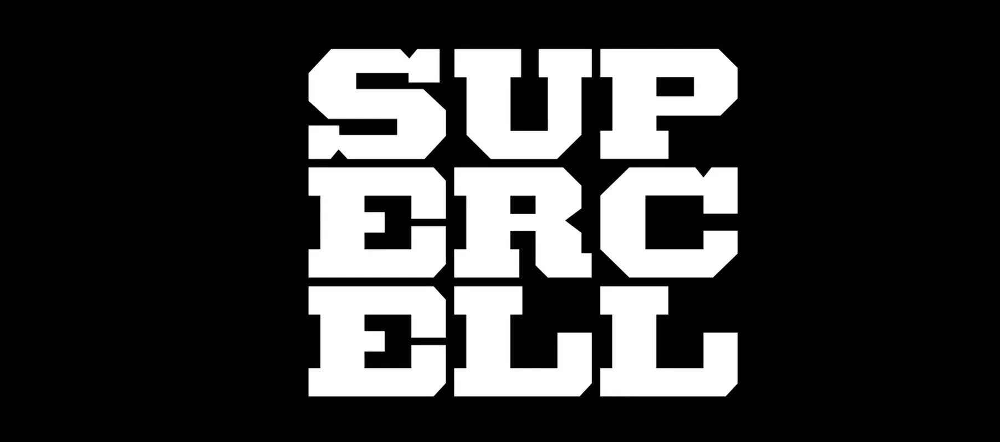

BRAWL STARS - ОТСТОЙ ИЛИ ОТСТОЙ?
В общем

Игроку предлагается на выбор большое количество разных бойцов с различной механикой игры и разные режимы игры. Изначально доступен лишь начальный боец Шелли, остальных бойцов можно разблокировать путём открытия ящиков, путём прохождения Пути к славе и Brawl Pass, подключением Supercell ID, а также купить в магазине.
У меня 30к кубков кстати))0)00 ПОЧЕМУ БРАВЛ ДНО?
Шучу конечно, бравл хорош, но не сравнится с дотой. В общем, как человек с 30 к кубками могу сказать несколько причин, из-за которых бравл старс уже не такой крутой.
А вот и сами причины!!!
Во первых здесь всё зависит от союзников, то есть если на твоей стороне слабаки, а ну другой крутыши, то все, проигрыш обеспечен. Есть только один режим где почти всё зависит от тебя. Коммьюнити Малолетние мальчики и девочки, которые засоряют игру. Тут даже говорить нечего, играть не умеют, зато все деньги с маминой карточки тратят на игру. Вообще причин дофига, но мне лень их перечислять.
ЧТОО! У ЭТОЙ ИГРЫ ЕСТЬ ПЛЮСЫ???
Плюсы.Вообще они правда есть. Brawl Stars - проработанная и бесплатная игра. Каждый школьник с мобильным телефоном может взять и скачать себе на телефон довольно качественную по внешнему виду игру. Игра выглядит красиво, за ней постоянно следят и исправляют баги, механики выверены и приятны. К тому же игра хоть и навязывает донат, но даже без него играть вполне реально. АХХА ЭТЛ ВСЁО ВСЕМ ПКА, я пойду в доту играть пудж пудж пдж